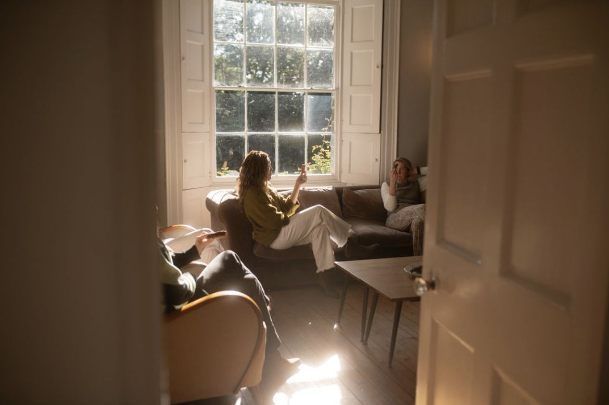
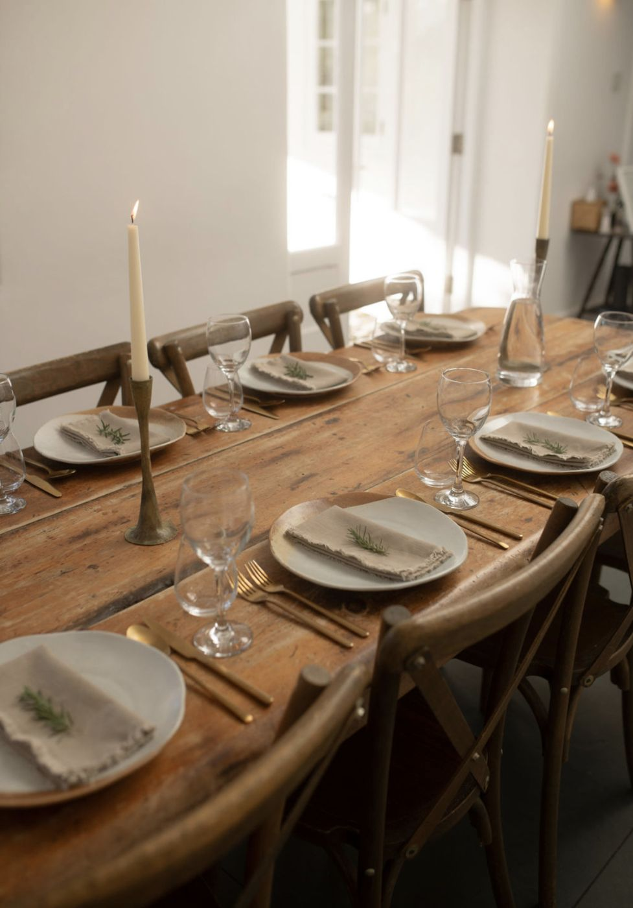
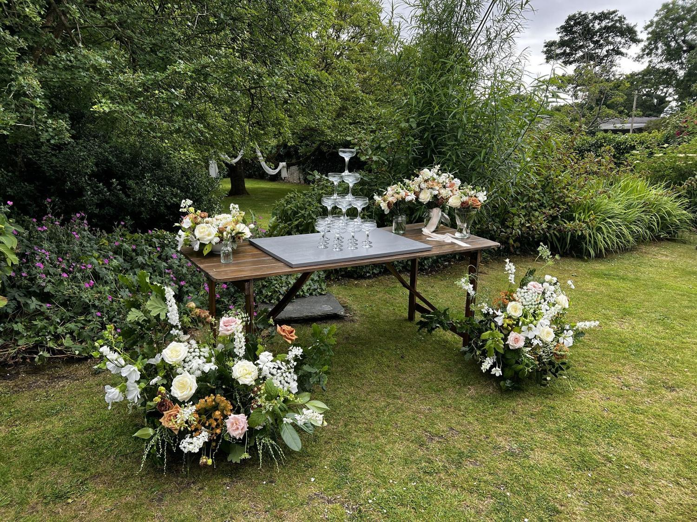

September 2026 · Presence
Why I'd rather you feel your day than film it

Some of my favourite moments at a wedding happen when nobody is holding a phone. Someone laughing so hard they have to sit down. A grandparent quietly taking it all in. The hush just before a speech.
Those moments only happen when people feel relaxed enough to stop managing. That's why so much of my job is invisible. If I'm doing it well, you won't notice the timeline, the supplier calls or the rain plan. You'll just notice that everything seemed to flow.
I'm not against photos. I create content myself, and a good photographer captures things you'll treasure for the rest of your life. But I'd love you to leave your day remembering how it felt, not how it looked on a screen.
So hand the worrying to me. Be in it.
September 2026 · Planning
What an on-the-day coordinator actually does

It's one of the questions I'm asked most, and the honest answer is: a lot more than the name suggests.
In the weeks before
I learn your plans inside out. I confirm every supplier, arrival time and delivery, and build a timeline that everyone works from, so nobody is ringing you on the morning of your wedding.
On the day
I'm the one person everyone comes to. I set out your décor, keep things running to time, gather people for photos, look after suppliers and quietly fix the little things that go sideways. There's always something, and you'll never hear about it.
Why it matters
Without a coordinator, those jobs usually land on a mum, a best friend or the couple themselves. I'd rather they were with you, enjoying it.
September 2026 · Cornwall
Five things I'd tell a friend planning a Cornish wedding

Plan for the weather, then relax about it
Cornwall can give you four seasons in an afternoon. Have a real wet-weather plan, and then let it go. Some of the loveliest days I've seen started with rain.
Think about travel early
Lanes are narrow and taxis are scarce in summer. Book guest transport before anything else that depends on people arriving on time.
Eat local
With my chef's hat on: Cornish produce is incredible. Build your menu around what's in season and your guests will talk about the food for years.
Leave space in the timeline
Golden hour here is worth waiting for. Don't pack the evening so tightly that nobody gets to step outside and see it.
Make it feel like you
The best weddings aren't the most styled. They're the ones where every detail says something true about the two people at the centre.